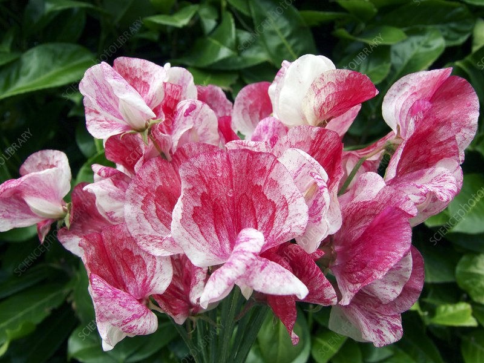
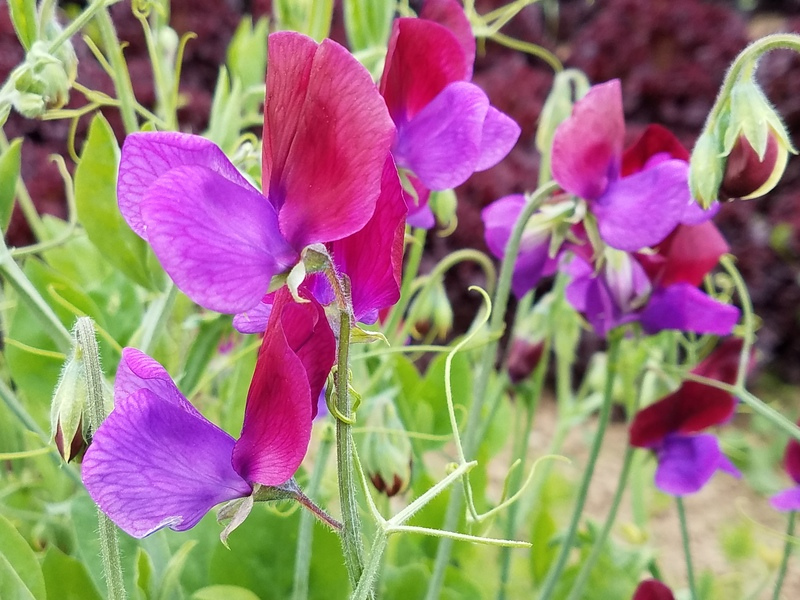
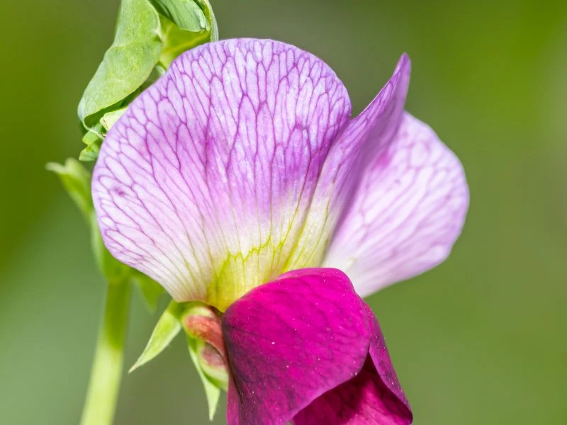
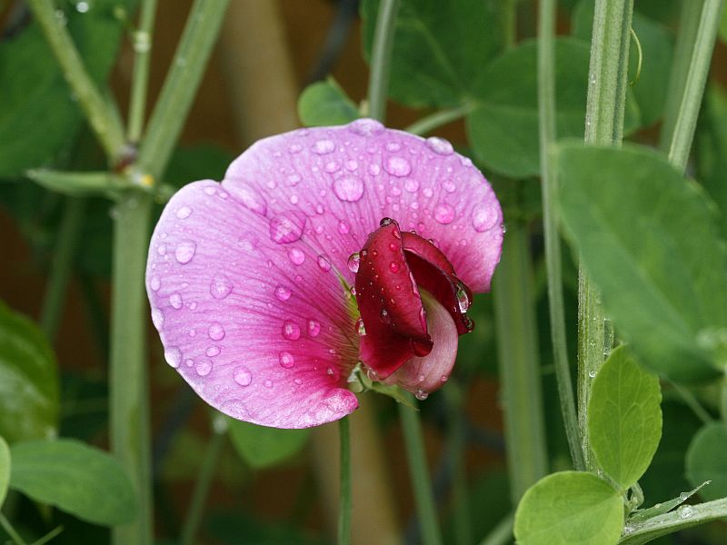

Meaning: Thank you for a lovely time
Origin
Victorians gave sweet peas to thank their hosts for an enjoyable time. The flower’s light and sweet smell was believed to brighten the home and serve as a symbol of hospitality.
Gallery



